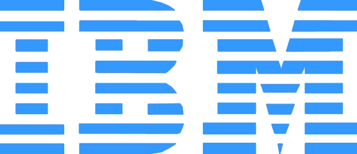

|  | |
The goal of our program is to cover advances in a broad set of research topics, with the overarching theme of Security for Mobile Computing.
| 9:30 | - | 10:30 |
Overview of Research Efforts
|
| 10:30 | - | noon |
Securing Mobile DevicesTopics: secure hardware architectures, hardware integrity, physical-layer security, TPM
|
| noon | - | 1:00 | Lunch (provided) |
| 1:00 | - | 2:00 |
Trusted PlatformsTopics: secure operating systems, secure embedded/mobile environments, hypervisors
|
| 2:00 | - | 3:00 |
CryptographyTopics: efficient provably secure schemes, randomized hashing
|
| 3:00 | - | 3:30 | Break |
| 3:30 | - | 5:00 |
Trustworthy ApplicationsTopics: software security, Web 2.0 security and privacy, malware detection and analysis
|
| 5:00 | - | 6:00 | Poster Session & Cocktail Social |